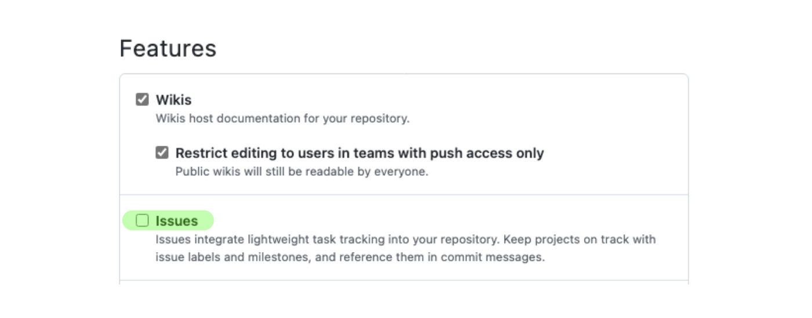

Recitation 2: Using Git & Github for Collaborative Development¶
Overview¶
After this recitation, the students should be able to use Git and GitHub for their teamwork in this course and other projects. Students should know about the GitFlow workflow and how to collaborate with other developers in their projects.
Prerequisites¶
- You have a GitHub account
- You have Git installed
- You have TypeScript installed
- You know Git Basics
You will be doing the activities as pairs, so be sure to find a partner! Unless specified, each step is to be done by both people.
Activity 1a: Forking a repo and adding a collaborator¶
- Have either you or your partner fork this repository, then add the other person as a collaborator on GitHub. You can do so by clicking on Settings, then Collaborators
- Under the General tab in Settings, check the "Issues" checkbox in the "Features" section to enable the issues pane for your repository 
- Clone the repository onto your local machine
Activity 1b: Run a GitHub Action Workflow¶
- On Github, click the Actions tab, enable the workflows and select the “Lint and Test” workflow
- Click on the "Run workflow" dropdown, then the "Run workflow" button (leave Branch to be
main). This runs the GitHub workflow that runs the linter and tests on the project
Our GH actions pipeline suggests that the main branch is broken! Let’s walk through the process to fix these errors.
Merging to main
In practice, you should not merge a branch into the main branch that could cause main to fail. This way, we can ensure that all the code on main is our most recent working product
Activity 2: Setting up Kanban board and creating issues¶
- Click through the build output and take a look at why eslint is failing. Take note of the names of each file - you should use these when naming your issues!
- On GitHub, under the Project tab, have one person create a new project with the "Board" template. Make sure to set the project to public and invite your partner as a collaborator
- Go back to the Project tab on the repository page and add the project board
- Under the Issues tab, have the other person create an issue for for correctly translating each typescript file that fails the eslint workflow
- Assign yourselves to both issues, one for each person
- Add the two issues to the project Kanban board under the Todo column
Activity 3: Branching, committing, and pushing¶
- In your local machine, create a new branch with a relevant name to the issue you are addressing (e.g. "fix-header-sizing-issue", "fix-multiple-dialog-bug", "add-sorting-feature")
- Fix the issue that you were assigned to, then add and commit the changes
- Commits should start with a verb, and what it does to the codebase (e.g. "Remove faulty condition from getCustomerDetails", "Fix failing CompositeTestCase", "Fix issue #21" )
- Push the branch to remote
git push --set-upstream origin <your-branch-name>
Activity 4: Writing pull requests¶
- On GitHub, create a pull request to merge the changes from the branch you have just pushed to the main branch
- Make sure it is to the main of your own forked repository! By default, Github selects the original repository instead of your own forked repository.
- Name your pull request appropriately
- In the description, describe what changes has been made to address the issue, and how has the changes been tested
- Notice that the GitHub action workflow runs automatically when you create the pull request! You should check that the file you translated passes the eslint check and that the correctness tests still pass
- Assign the issue you created to the pull request
- Request your partner for a code review
Activity 5a: Doing code reviews and resolving merge conflicts¶
- Review your partner’s code (use the review change button). Approve changes if it looks good
- Once your PR has been reviewed, merge your changes! Resolve any merge conflicts that arises accordingly
- Return to the Kanban board. If everything was set up correctly, the issue should automatically move into the Done column
Activity 5b: Check GitHub actions¶
- Click on the Actions tab. If you have resolved all the issues correctly, the tests and linter should now pass, and a green check should show
Remember to do Recitation Quiz 1 on Gradescope! Please only open it after you have completed all the steps above.